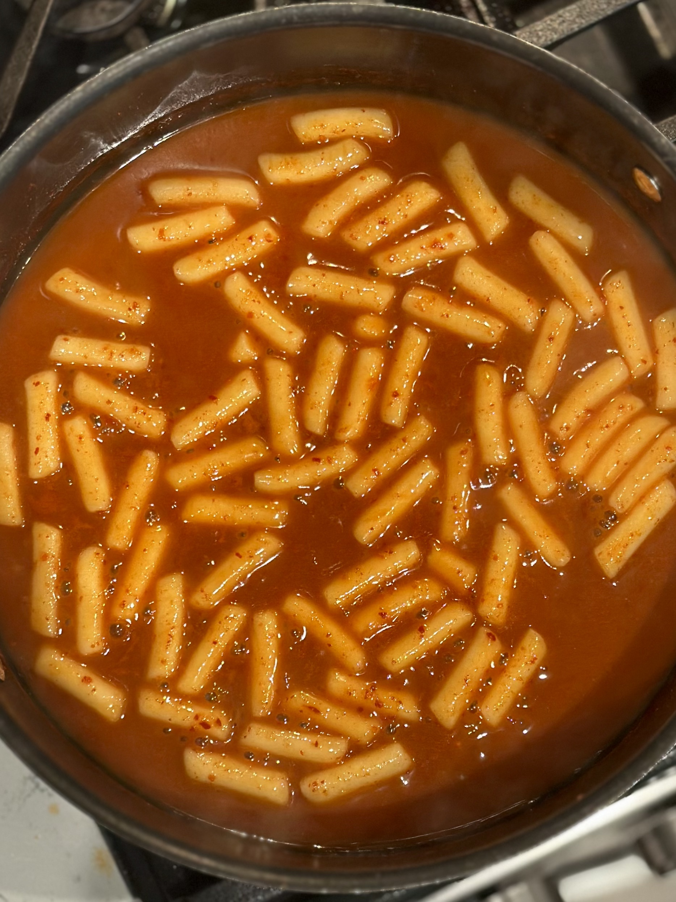
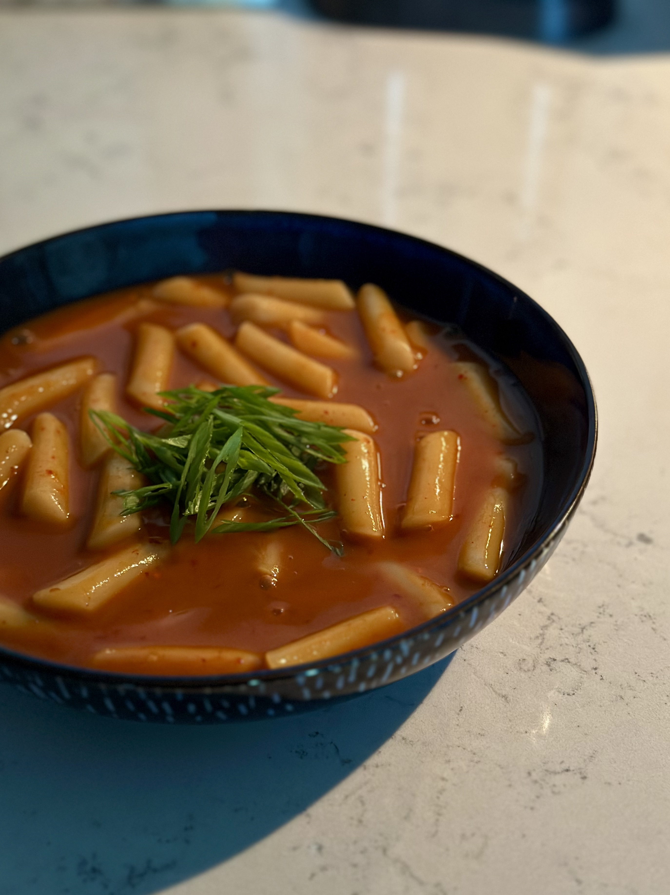
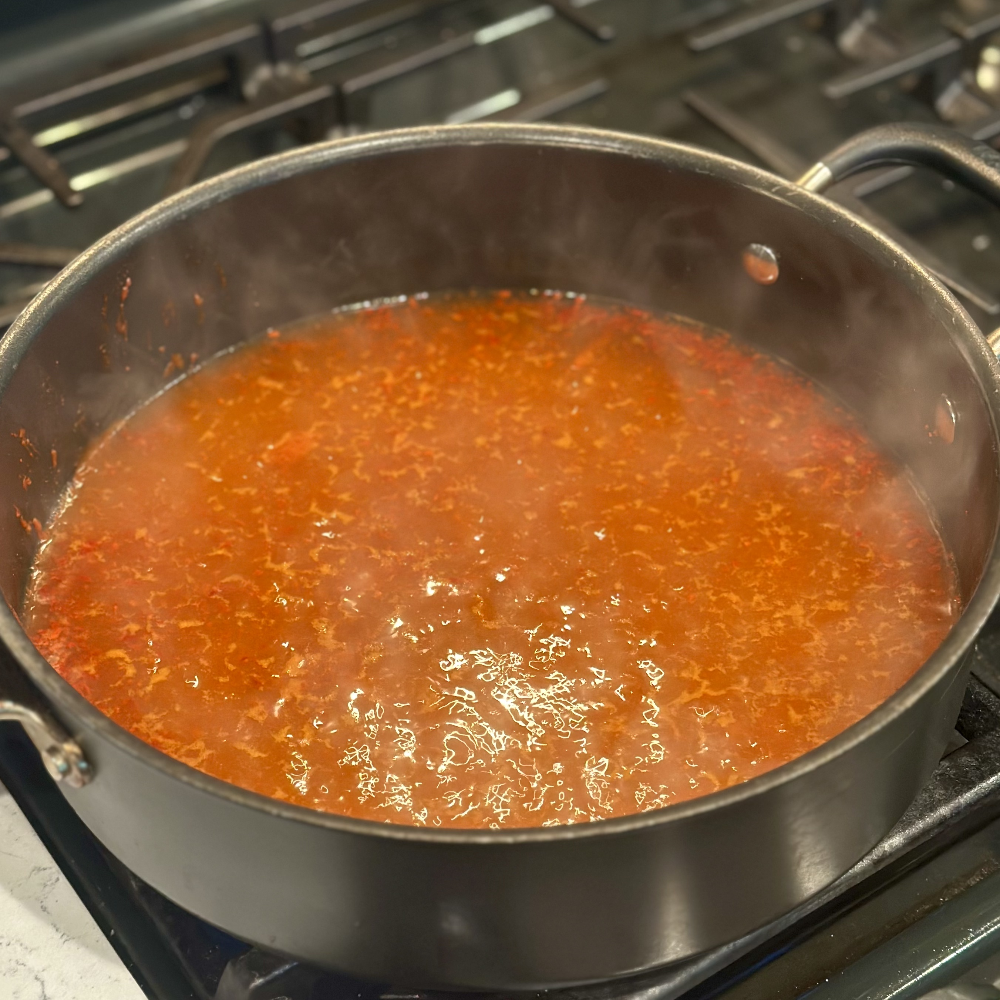
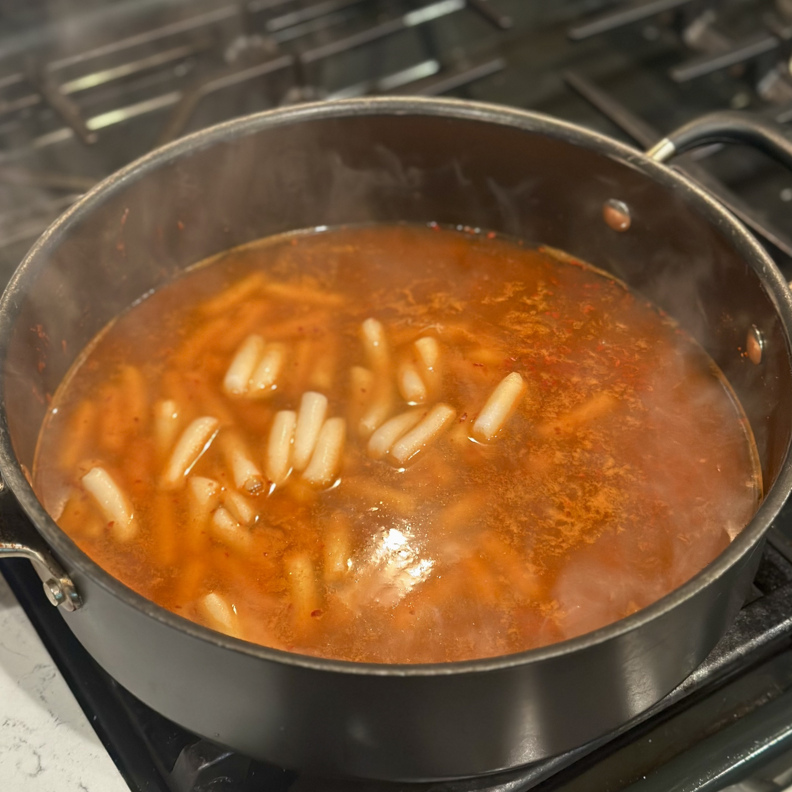
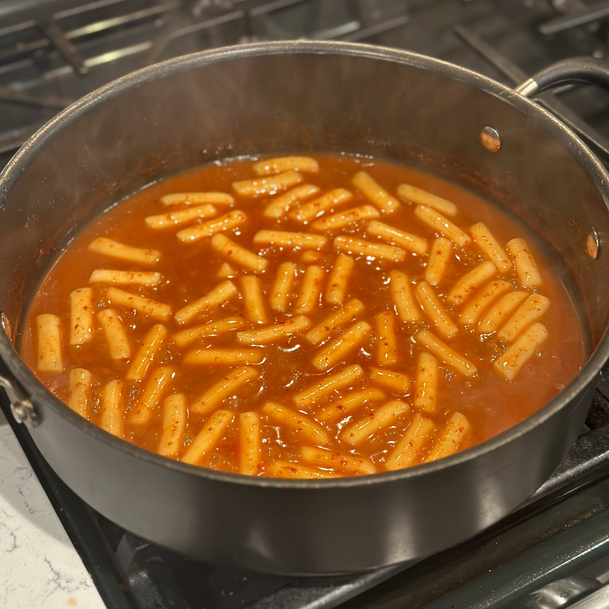
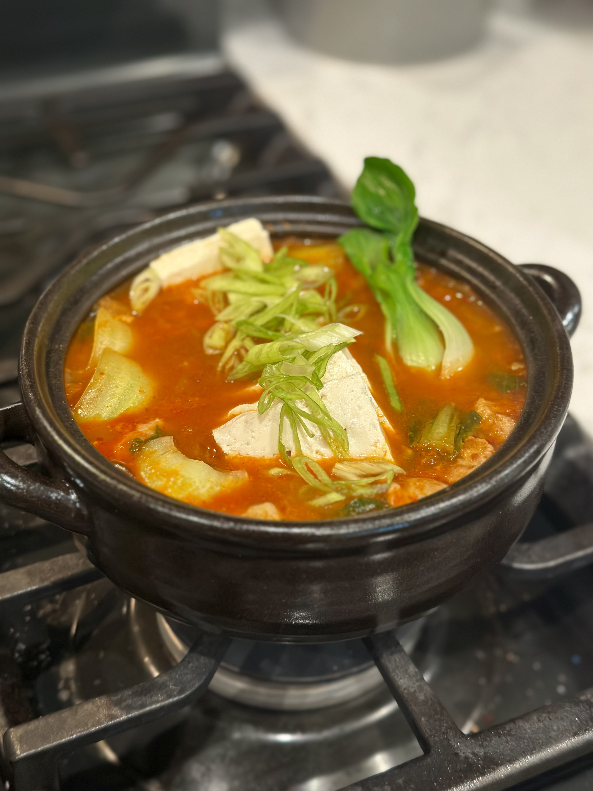

Tteokbokki.

Tteokbokki topped with green onion.
Overview
What is tteokbokki?
Tteokbokki (떡볶이, pronounced "tuck-bo-key") is a Korean dish centered around tteok, or rice cakes. The version most commonly associated with the name today consists of cylindrical rice cakes simmered in a thick, bright red sauce made primarily from gochujang, a fermented Korean chili paste. The sauce is spicy and sweet, and common additions include eomuk (Korean fish cakes), green onion, cabbage, and boiled eggs.
Although its name can be translated as "stir-fried rice cakes," modern tteokbokki is usually simmered rather than stir-fried. As the rice cakes cook, starch releases into the liquid to help produce the thick sauce the dish is known for.
Origin and History
Tteokbokki existed long before the modern spicy version. Earlier forms were seasoned primarily with soy sauce and could include ingredients such as beef, mushrooms, and vegetables. This style is now commonly known as gungjung-tteokbokki, or "royal court tteokbokki," because of its association with Korean court cuisine.
The familiar red, gochujang-based tteokbokki is a much more recent development. Its origins are generally associated with Seoul in the decades following the Korean War. Ma Bok-rim, a vendor in the Sindang-dong neighborhood, is widely credited with helping popularize an early version made with gochujang and black bean paste. Similar shops eventually gathered in the neighborhood, establishing Sindang-dong as one of Seoul's most well-known destinations for tteokbokki.
During the following decades, inexpensive tteokbokki spread through street stalls and bunsikjip, or snack shops, particularly around schools. What had once been a comparatively elaborate dish became an affordable, everyday snack and eventually one of the foods most closely associated with Korean street food.
Tteokbokki and Pojangmacha
Tteokbokki has become closely associated with Korean street-food culture, particularly pojangmacha. These street stalls, traditionally constructed as carts or small stands sheltered by fabric or plastic coverings, sell inexpensive foods that can be eaten quickly or enjoyed alongside drinks. Tteokbokki is one of the foods commonly found alongside dishes such as eomuk, sundae, gimbap, and fried foods.
The large pans of bright-red tteokbokki found at street stalls have become one of the dish's most recognizable settings. Its relatively low cost, filling rice cakes, and ability to remain hot in a simmering sauce make it particularly well suited to this style of service. Tteokbokki is also strongly associated with casual snacking, especially among students, while pojangmacha more broadly play a role in Korea's evening and late-night eating and drinking culture.
Appearance and Flavor
Gochujang tteokbokki is recognizable by its glossy red sauce and long, cylindrical rice cakes. The rice cakes have a dense, pleasantly chewy texture and relatively mild flavor, allowing them to absorb the spicy and savory sauce surrounding them.
The exact flavor varies considerably between recipes, but the sauce generally balances the heat and fermented flavor of gochujang with sweetness and savory ingredients. Fish cakes and anchovy-based broth are also common and contribute additional savory flavor. Because the sauce thickens as the dish cooks, it clings closely to both the rice cakes and any additional ingredients.
Recipe
Ingredients
- 400 g rice cakes
- 700 g anchovy or kelp stock
- 2 tbsp gochujang
- 1 tbsp gochugaru
- 1 tbsp soy sauce
- 1 tbsp sugar
Directions
- Cover rice cakes in cold water and let soak for 10 minutes.
- In a large, flat pan, add the stock and bring to a rapid simmer.
- Add the gochujang, gochugaru, soy sauce, and sugar to the pan and stir until well combined.
- Drain the rice cakes and add them to the sauce.
- Let simmer 10-15 minutes until the sauce thickens and coats the rice cakes.
- Serve hot and top with sliced green onions.[1]
Notes
- You can also add Korean fish cakes, boiled eggs, or vegetables like cabbage or carrots.



See Also

Kimchi JjigaeReferences
- Choi, Bae-Young, and Youngwook Lee. “Transformation of Commercial Tteokbokki in Seoul after the Korean War: Through the Lens of Newspaper Articles.” Food, Culture & Society, vol. 29, no. 4, 2026, pp. 1232-1261, doi.org/10.1080/15528014.2026.2622733. Accessed 4 Sept. 2026.
- “Street Food Loved by Koreans.” VISITKOREA, Korea Tourism Organization, 4 Dec. 2023, english.visitkorea.or.kr/svc/contents/contentsView.do?vcontsId=184669. Accessed 3 Sept. 2026.
- Trunkett, Hwajeong L. “Tteokbokki: Street Food Bringing People Together.” KOREA, Korean Culture and Information Service, Jan. 2019, korean-culture.org/eng/webzine/201901/sub08.html. Accessed 3 Sept. 2026.